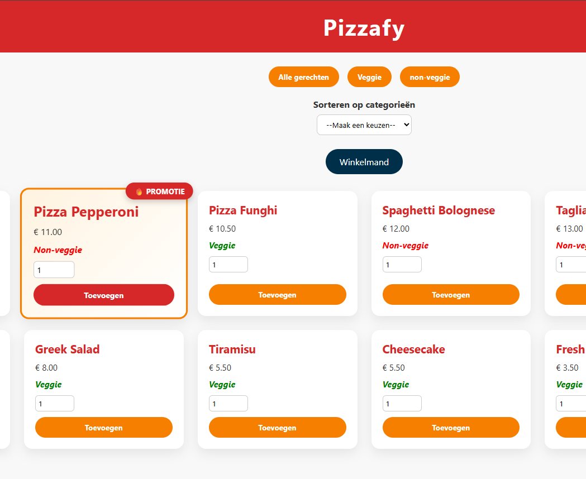
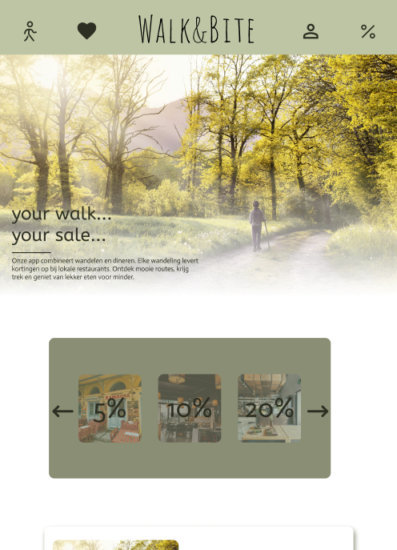
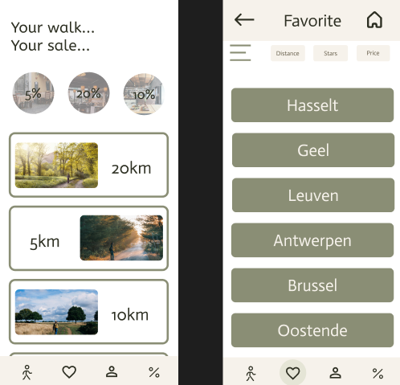

Carwash


Tijdens mijn middelbare school heb ik een carwash georganiseerd ten voordele van het Maendeleo Centrum in Tanzania. Dit centrum is de plek waar ik verbleef tijdens mijn inleefreis naar Tanzania. Met deze actie wilde ik iets terugdoen en het centrum financieel ondersteunen.
De carwash vond plaats op de parking van mijn middelbare school. De organisatie en uitvoering heb ik niet alleen gedaan: mijn vriendinnen en mijn ouders hebben mij hierbij geholpen. Samen zorgden we voor het wassen van de auto’s en het klaarzetten van al het nodige materiaal.
Deze activiteit leerde mij hoe belangrijk samenwerking en organisatie zijn, en hoe je met een lokaal initiatief een positieve impact kunt hebben op een project in het buitenland.

Take Away Website
Voor mijn examen Scripting in het eerste jaar Digitale Vormgeving heb ik een take-away website gemaakt met pizza’s en salades. Het doel van de opdracht was het schrijven van de code en het laten werken van de functies, niet de opmaak. Zo heb ik onder andere een winkelmandje, de mogelijkheid om kortingscodes toe te passen en een admin-login uitgewerkt.
Walk&Bite
Voor mijn examen UI Design in het eerste jaar Digitale Vormgeving heb ik een wandel- en restaurantapp/website ontworpen. Het maakproces begon met twee aparte groepsopdrachten, die later zijn samengevoegd tot deze individuele opdracht voor het examen. De app is bedoeld om gebruikers te stimuleren meer te bewegen: je kunt je wandelingen opnemen en wanneer je een bepaalde afstand hebt bereikt, verdien je korting bij een restaurant naar keuze. Zo combineren we gezonde beweging met een leuke beloning, en wordt wandelen aantrekkelijker en leuker gemaakt voor iedereen.


Deze wandel- en restaurantapp/website is ontwikkeld als examenproject voor UI Design in mijn eerste jaar Digitale Vormgeving. Tijdens het maakproces zijn eerst twee aparte groepsopdrachten uitgevoerd, die uiteindelijk samen zijn gebracht tot deze individuele opdracht. Het idee achter de app is om mensen meer aan het bewegen te krijgen door hun wandelingen bij te houden en hen te belonen: na het lopen van een bepaalde afstand kan een gebruiker korting krijgen bij een restaurant naar keuze. Zo wordt gezond gedrag gestimuleerd en tegelijkertijd een kleine beloning geboden, wat het concept leuk en motiverend maakt.